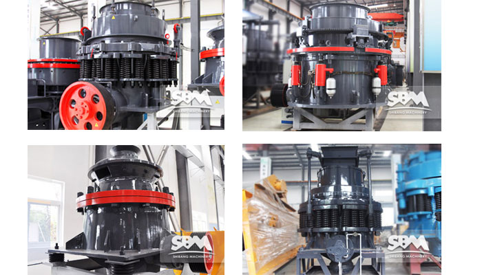
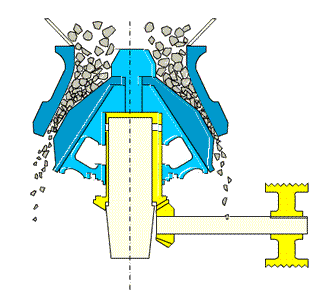

Cone Crusher
Cone crusher is suitable for crushing raw material, construction, road building, chemistry and silicate industry. It has many advantages such as crushing ratio, high efficiency, low energy consumption, uniform product size, suitable for crushing and finely various ores, rocks.
It is widely used in mining, smelting, building materials, highway, railway, water conservancy and other industries. SBM cone crusher structure is more reasonable and perfect technical parameters is more advanced, in the manufacture, installation, use, maintenance, etc. . This type of automatic stone crusher has been well received by our honored customers both at home and abroad.
Different Types Of Cone Crusher
Cone crusher is the advent of than roll crusher late hundred years, more than 20 years younger than gyratory crusher. When the cone crusher has not yet come, early twentieth Century had the very big development, it is required to provide than gyratory crusher and jaw crusher can supply more fine products, in this case, in addition to the use of roll crusher for fine crushing equipment, external, but also the use of coarse crushing crusher do fine crushing equipment, with the continuous the development of mining technology, cone crusher is divided into several.
SBM is a professional mining manufacturer, our cone crusher are divided into 4 kinds, respectively:HPC cone crusher, CS cone crusher, PY cone crusher,HST cone crusher. Cone crusher in different areas has the different price and the price of different models is also different. SBM crusher machine price is very reasonable and there is always a right for you.
Among them,HPC series high efficient hydraulic cone crusher has the world advanced level, it is the cutting speed, eccentricity and high performance type of crushing chamber design perfect combination. It not only improves the production capacity and crushing efficiency, but also expanded the scope of application, from limestone to basalt, produced from the stone to a variety of ore crushing, it can provide the crushing performance unmatched in various medium crushing and fine crushing, super finely homework. The high speed, high breaking capacity and unique patented design makes the broken after the finished product has a cubic extremely high quality, and easy to maintain and can ensure that the operation of high stability of extraordinary, enjoy high reputation in the world.
Unique Performance Characteristic
High performance type of crushing chamber and high crushing frequency satisfactory Union, makes the cone crusher processing ability is improved, and because of the use of the principle of the interparticle breakage, crushing product - cubic structure, greatly reduces the needle sheet material.
Cone crusher has the advantages of simple structure, convenient operation, maintenance, discharge port adjusting is convenient, time-saving and labor-saving maintenance, especially the lining board is easy and quick to replace, reduce downtime.
Foreign body in can not be broken by the crushing cavity or for some reason machine overload, cone crusher spring insurance system to realize the insurance, cone crusher row ore increase. Foreign bodies from the cone crusher discharge cavity, such as foreign body stuck in the row ore mouth using the cavity clearing system, so that the row ore continues to increase, the foreign body discharge cone crusher chamber. Cone crusher under the action of the spring, row ore mouth automatic reset, cone crusher machine to resume normal work.
Get Price And Support
Simply complete the form below, click submit, you will get the price list and a SBM representative will contact you within one business day. Please also feel free to contact us by email or phone. ( * Denotes a required field).